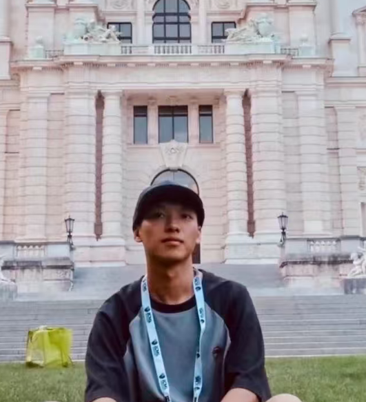
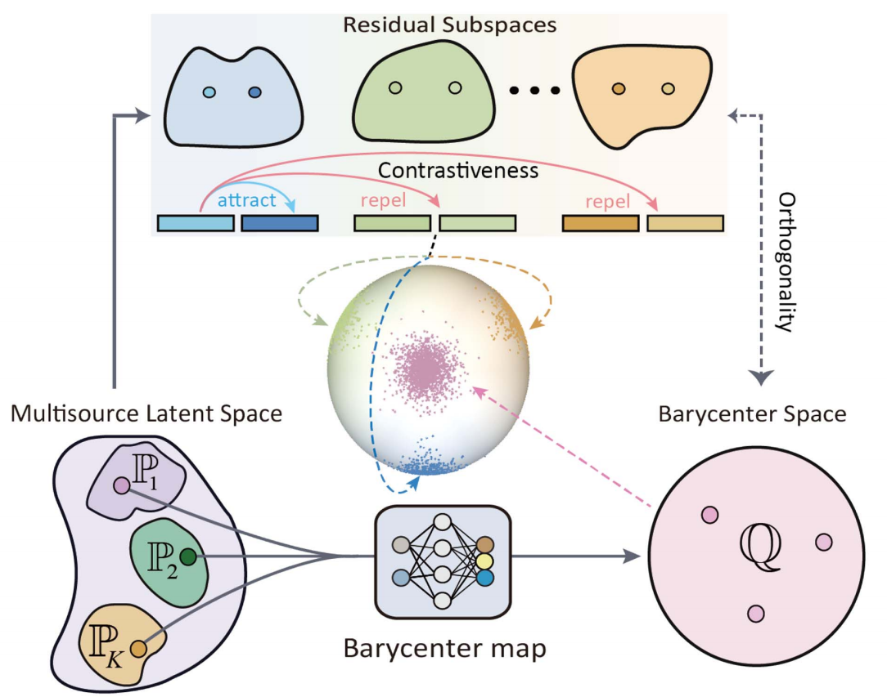
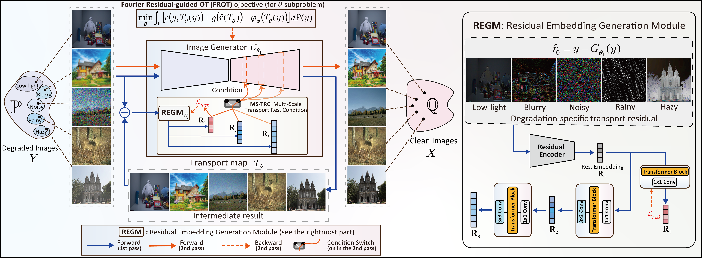
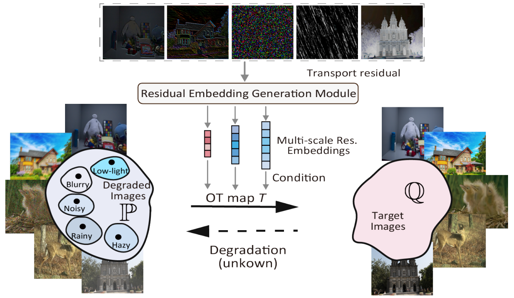
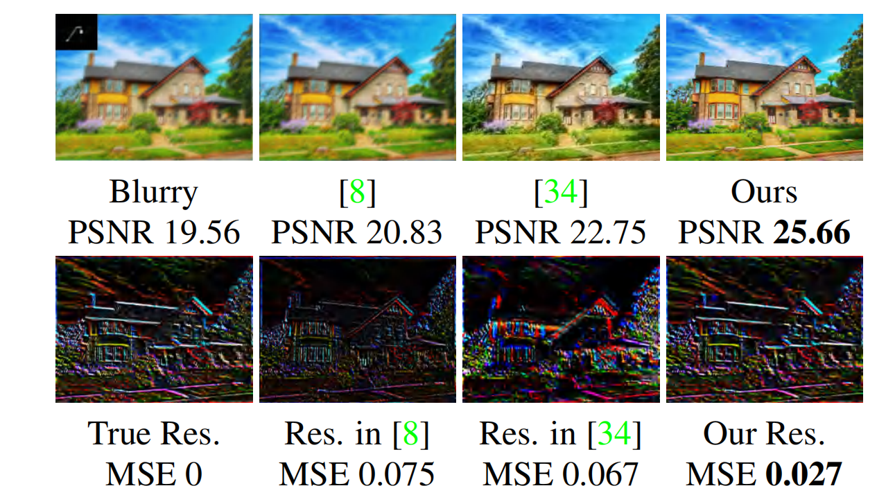
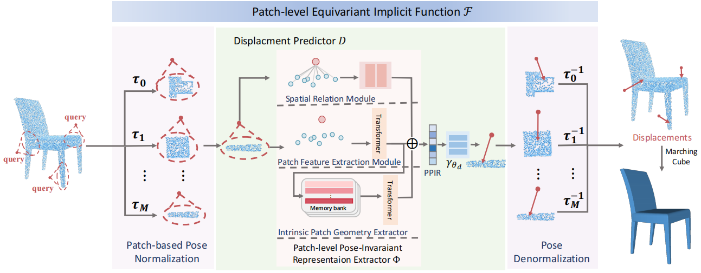

2023–Present
Ph.D. in Mathematics
Xi'an Jiaotong University, China
Advisor: Prof. Jian Sun
Hello! I'm Xiaole Tang. I'm currently a fourth-year Ph.D. student in Mathematics at Xi'an Jiaotong University, advised by Prof. Jian Sun.
Piror to that, I did my B.S. degree at University of Electronic Science and Technology of China in 2023, advised by Prof. Xi-Le Zhao.
Currently, I mainly focus on optimal transport, unified multimodal understanding and generation, and VLM post-training.

2023–Present
Xi'an Jiaotong University, China
Advisor: Prof. Jian Sun
2019–2023
University of Electronic Science and Technology of China
Advisor: Prof. Xi-Le Zhao

Binding Multiple Modalities via Multimodal Wasserstein Barycenter
NeurIPS (oral), 2026.





Learning 3D Equivariant Implicit Function with Patch-Level Pose-Invariant Representation
NeurIPS, 2024.